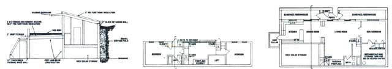
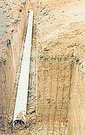
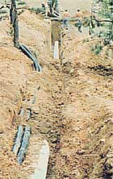
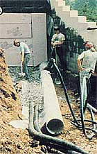
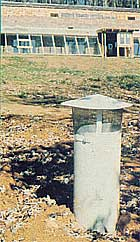
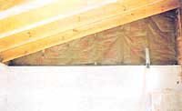
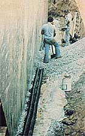
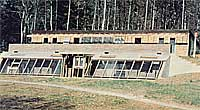

My Mother's House Part Iv
As Mother's earth-sheltered house is backfilled, it's time to discuss the natural air conditioning system, including the earth as a heat exchanger.
By the Mother Earth News staff
January/February 1982
With winter upon us, the Eco-Village crew has been hard at work getting "My MOTHER's House" ready to weather the coming storms. And beyond the innumerable seasonal details to be taken care of-which include installing insulation, sealing, shingling, and flashing to name a few-we've had to finish off one component that we really won't be needing all that much until next summer.
Because our building's single most important energy-conserving feature is its earth berming (and, on the front half of the structure, the sod roof), we've been anxious to get on with the necessary backfilling and grading. But to do so, we've also had to go ahead and install the natural cooling system (it consists of a pair of buried 15"-diameter, 60'-long plastic pipes), through which ground-cooled air can be drawn into the house. Now air conditioning may not be at the top of your list of concerns as the snow blows past the living room window, but the tubes had to be installed before the berming could be done. So snuggle up to your woodstove while we tell you about our passive home cooling system.
THE EARTH AS HEAT EXCHANGER
Since soil is far less willing to conduct heat than is air, the temperature of the earth below the frost line remains comparatively constant throughout the year. At 25 feet down there's essentially it change in the ground temperature . . . though at shallower depths the tempering effect is weaker. In general, however, the earth six feet or more below the surface will stay fairly close to the average annual air temperature for the area.
And that stability of ground temperature is, as many of you know, the key to the energy efficiency of earth-sheltered homes. The soil surrounding such structures is likely to remain in the 50°F to low 60°F range, so the buildings lose less warmth in the winter, and gain less heat in the summer, than they would if their walls were exposed to outside air.
However, earth sheltering doesn't eliminate the need to exchange a home's interior air at least once every two hours. (Such a change is required to maintain adequate oxygen in a house, and to prevent the accumulation of carbon dioxide and toxins emitted by gas appliances, woodstoves, and the building materials themselves.) And you may be surprised to know that, in a very well-insulated dwelling, the task of heating or cooling the "new" air to room temperature can account for a substantial portion of the building's thermal requirements.
In order to limit the difference between the temperature within a house and that of the exchange air that must be introduced, a few pioneers have been experimenting with arrangements of buried "breathing" tubes . . . by means of which the natural heat sink of the ground tends to warm or cool the indrawn air almost to its own temperature. For the most part, such systems have been used to provide cooling, so they've been nicknamed "cool tubes". In truth, however-since, incold weather, they bring in outside air that's already warmed above ambient temperature and doesn't require as much energy to be brought up to indoor comfort levels-they can contribute to efficient home heating, too.
Because the use of passive ground-source heating or cooling systems is so new, little technical information is currently available. So we based our design decisions on a few rudimentary facts gathered mostly from folks who'd already tried similar setups. First, we knew that the thermal conductance of metal pipe isn't substantially better than that of the plastic variety, so we opted for less expensive, durable irrigation-type PVC. Originally, we were in the market for the 12" size (though any diameter between 8" and 18" would likely have been acceptable), but we eventually picked 15" . . . simply because it was readily available.
To take advantage of the most stable ground temperatures possible, we buried our pipes as deep as was practical . . . a full ten feet. At the same time, we ran perforated plastic drain lines around the building's foundation and laid their outlets beside the cool tubes. The slope of the hillside on which our house is being built made the task of draining the pipes an easy one. Water that condenses in the tubes (the situation arises in summer, when the relative humidity of the warm air is increased to saturation by the cooling effect of the earth) runs downhill to drains located at the air entrances.
The available data suggest that cool tubes are effective for only about 60 feet in one run: After that distance, the temperature difference between ground and air-in a tube where air is flowing at an adequate rate-becomes too small for thorough heat transfer. Consequently, we used two 60' lengths of the 15" tubes . . . with one entering at the front of each end of our structure. A ducting channel in the slab then runs the length of the mass wall, to allow us to distribute the cool (or warm) air evenly. (This trench also serves as the runway for the 2" PVC kitchen sink drain.)
Rather than using blowers to pull air through the tubes, we've decided to let convection do the job for us. We're building a row of vents into the peak of the roof to encourage air to flow up the pipes, through the house (where it's warmed), and out the openings. Information from other folks who've tried it indicates that the natural flow of this "thermal chimney" should be more than enough to change the air in the house several times an hour, if desired. During the winter, however, only a small amount of venting will be used, since the very frequent air changes that are so conducive to summertime comfort aren't needed when the chill is on.
Once all the pipe was laid in place and glued, and the trenches filled in, one group built and installed intake screens/ covers for the tubes, while the rest of the team finished off the plumbing exits and began backfilling against the dwelling's walls.
To prevent the earth from dislodging the polystyrene insulation as it was poured into the excavation, this task had to be handled very slowly and carefully. Fill dirt was added until we reached a level about 1-1/2 feet below the edge of the roof on the back of the building. At that point, we laid a 6'-wide sheet of 4-mil polyethylene along the entire length of the building, to prevent water draining off the roof from running directly down along the wall. The plastic was secured beneath the shingles and flashing, and then the remainder of the fill was moved into place.
Rather than attempt to compact the earth as we went (since doing so might have damaged or shifted the insulation), we simply filled all the way up to the roof edge and let the dirt settle of its own accord. (As of this writing, we've seen just about a foot of drop along the back wall.)
We managed to get the roof sodded and some rye grass started on the berms before our first heavy frost . . . so from the outside at least, MOTHER's house is really beginning to take shape. The greenhouse is going up as this article is written, and much of the ductwork for the solar heating setup is already in place! In our next installment, we'll be able to show you just how our hybrid passive heating system works!
This is part of a seven-part series on building My Mother's House.
Part I, Part II, Part III, Part V, Part VI, Part VII
|
 Elevation drawings. |
 The building's natural air conditioning system consists of 15" diameter PVC irrigation pipes buried deep in the cool soil. |
 The drainage lines for the foundation run through the same trenches as the "cool tubes". |
|
 The cooling system pipes enter the house through an opening at each end of the front wall. |
 The intake ends of the cool tubes are capped with screens and shields to keep rain out. |
 The aboveground portions of the upper level are insulated with 1/2" polystyrene and 3-1/2" fiber. glass . . . for a combined R-value of over 20. |
|
 Gravel is spread around the drainpipes that lie against the back wall. |
 Fill dirt was added until we reached a level about 1-1/2 feet below the edge of the roof on the back of the building. We then laid a 6 foot-wide sheet of 4-mil polyethylene along the entire length of the building, to prevent water draining off the roof from running directly down along the wall. |
 The greenhouse section of MOM's house nears completion. |